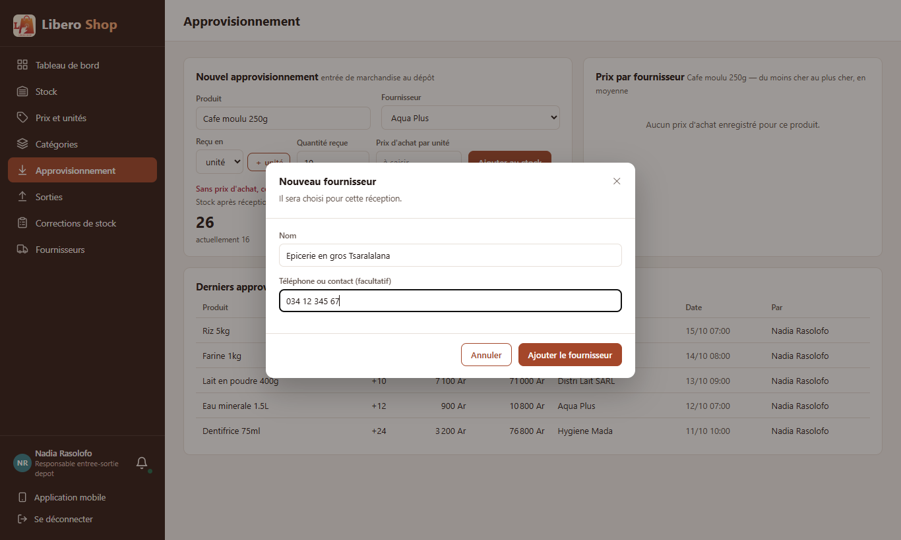
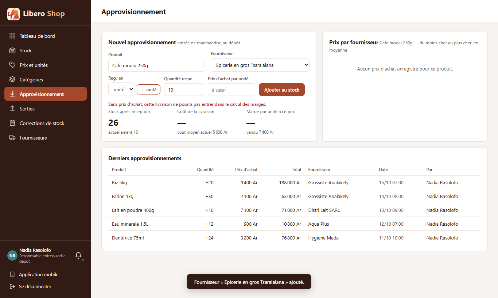
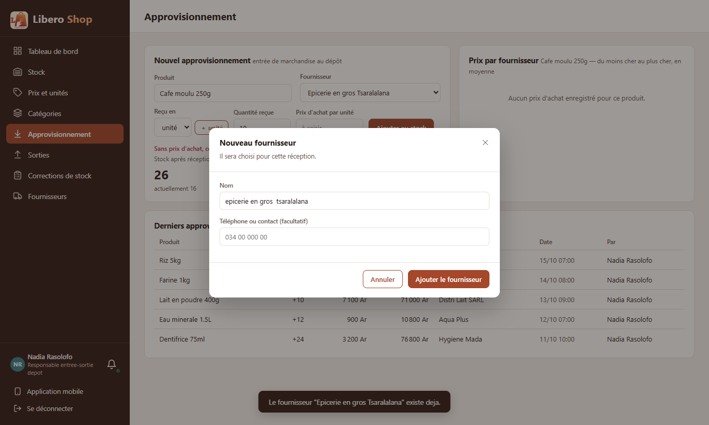
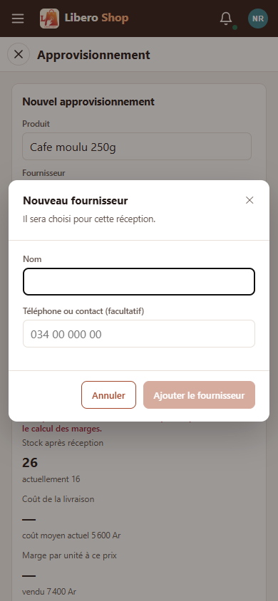

← Tous les comptes rendus de l'interface
UI-32Nouveau fournisseur depuis la réception
- La liste « Fournisseur » d'Approvisionnement se termine par « ＋ Nouveau fournisseur… ».
- Une petite fenêtre demande le nom et, si on l'a, le téléphone. On ne quitte pas la réception en cours.
- Le fournisseur créé est choisi d'office pour la réception.
- Le même nom écrit autrement (majuscules, accents, espaces) est refusé : le message dit lequel existe déjà.
- Côté serveur : une création de fournisseur (
POST /api/suppliers) réservée au responsable de dépôt et à l'administrateur.
1. Le problème
Un livreur inconnu arrive avec de la marchandise. Pour l'enregistrer, le fournisseur devait déjà exister. Or le logiciel ne savait ajouter des fournisseurs que par l'import d'un fichier. Le responsable de dépôt devait donc soit choisir « Sans fournisseur » (et perdre la comparaison des prix d'achat), soit préparer un fichier pour une seule ligne.
2. Ce qui a été fait
« Le même nom » se juge sans majuscules, sans accents ni espaces : « Grossiste Analakely » et « grossiste analakély » sont un seul fournisseur. C'est la même règle que l'import de fournisseurs, pour que les prix d'achat d'un grossiste restent sur une seule ligne du tableau « Prix par fournisseur ».
3. Le résultat en images
Nadia — responsable de dépôt




4. À éviter / attendu
// tout nom différent au caractère près
// est un nouveau fournisseur
suppliers.findByName(name)// comparer les noms « repliés »
CsvTable.normalise(existing.getName())
.equals(CsvTable.normalise(name))5. Tableau récapitulatif
| Fichier | Changement |
|---|---|
backend/…/service/SupplierService.java | nouveau : création d'un fournisseur, nom nettoyé, doublon refusé |
backend/…/web/SupplierController.java | POST /api/suppliers (responsable de dépôt, administrateur) |
backend/…/web/dto/CreateSupplierRequest.java, SupplierResponse.java | la demande (nom obligatoire, 120 caractères au plus) et la réponse d'un fournisseur neuf |
ui/…/shared/components/supplier-create-dialog.component.ts | nouveau : la fenêtre « Nouveau fournisseur » |
ui/…/features/depot-manager/supply.component.ts | entrée « ＋ Nouveau fournisseur… » ; le fournisseur créé est choisi |
ui/…/core/api/catalog.api.ts, core/models/api.model.ts | appel de création et son type |
| Règle | Test |
|---|---|
| Nom nettoyé (espaces), contact vide enregistré comme absent | SupplierServiceTest — nouveauFournisseurEnregistreAvecSonNomNettoye, contactVideEnregistreCommeAbsent |
| Le même nom écrit autrement est refusé | SupplierServiceTest — memeNomEcritAutrementRefuse |
| Nom vide refusé | SupplierServiceTest — nomVideRefuse |
| La fenêtre attend un nom ; elle envoie un contact vide comme absent et rend le fournisseur créé | supplier-create-dialog.component.spec.ts |
Tests : serveur au vert (593 tests), interface au vert (216 tests).
Hors périmètre, signalé : SupplierImportService (existant) utilise des DTO de web/dto, contrairement à la
règle des couches ; non modifié ici. La page Fournisseurs aura son propre « ＋ Nouveau » avec UI-34, en
réutilisant cette fenêtre.